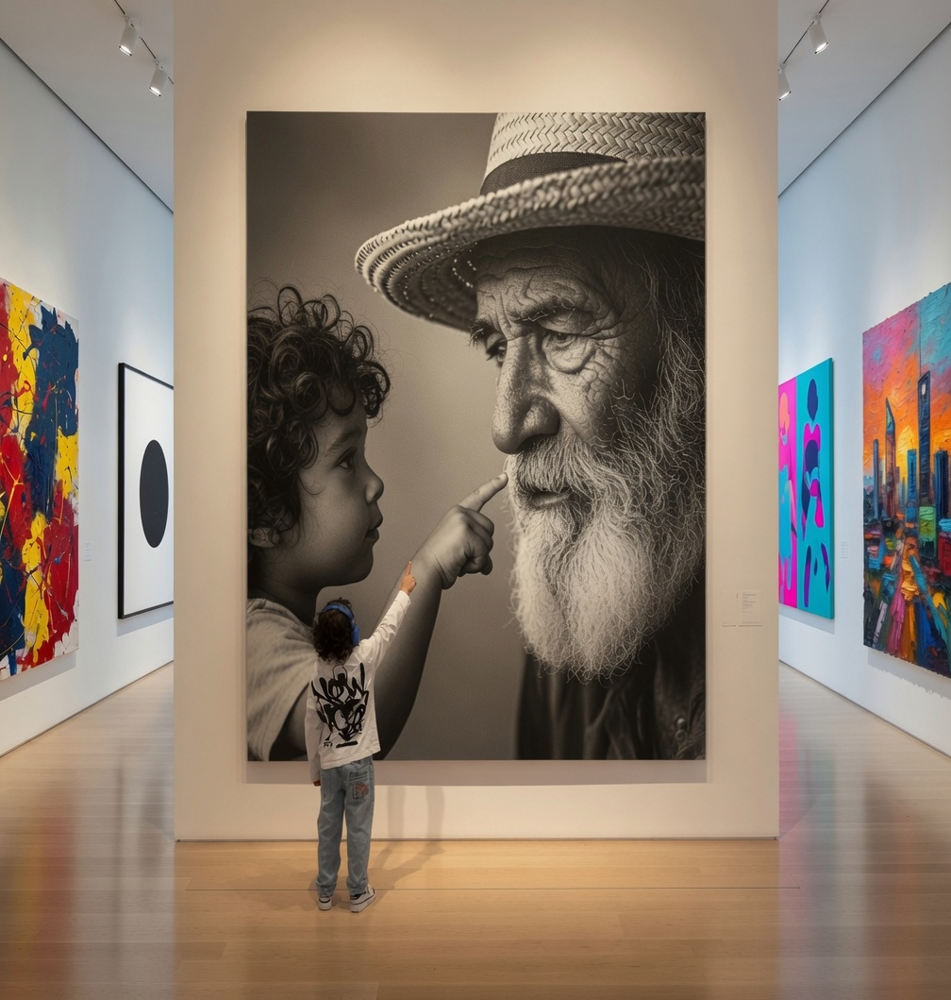

XXVII ACADEMY
Incubateur d'artistes
Un incubateur d'artistes dédié aux enfants et jeunes talents, fondé sur le mentorat intergénérationnel, l'exigence artistique et l'ouverture internationale. Ici, l'art n'est pas un loisir.
Un artiste confirmé accompagne un enfant ou un jeune talent dans la durée. Une enfant révèle un artiste. Transmission inversée, co-inspiration, regards croisés : deux générations qui se rencontrent. La transmission est au cœur du parcours, dans un dialogue où l'expérience rencontre l'élan créatif.
Des expositions où des enfants et artistes émergents sont exposés au même niveau que les artistes professionnels.

Sohan, 6 ans, lauréat de la première édition, peint depuis l'âge de deux ans. Curieux et plein de vie, il transforme tout ce qu'il voit en couleur et en mouvement. Ses toiles racontent ce que ses mots ne savaient pas encore dire. L'art l'a aidé à se concentrer, à apaiser son énergie et à découvrir la beauté du partage.